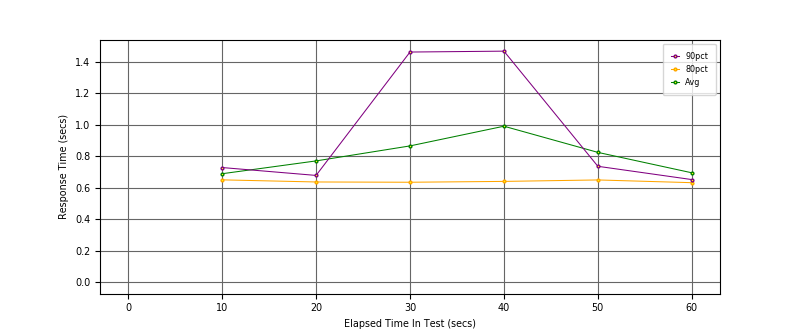
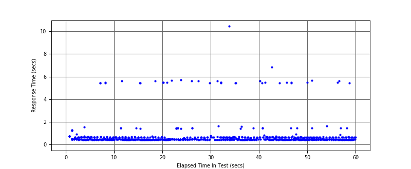
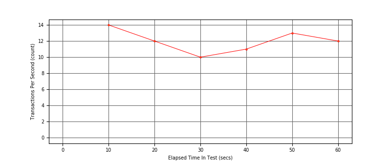

Performance Results Report
Summary
transactions: 741
errors: 0
run time: 60 secs
rampup: 0 secs
test start: 2017-08-22 22:43:02
test finish: 2017-08-22 22:44:02
time-series interval: 10 secs
workload configuration:
| group name | threads | script name |
|---|
| user_group-1 | 7 | regular_user.py |
| user_group-2 | 3 | intensive_user.py |
All Transactions
Transaction Response Summary (secs)
| count | min | avg | 80pct | 90pct | 95pct | max | stdev |
|---|
| 741 | 0.416 | 0.798 | 0.640 | 0.729 | 1.622 | 10.458 | 1.146 |
Interval Details (secs)
| interval | count | rate | min | avg | 80pct | 90pct | 95pct | max | stdev |
|---|
| 1 | 141 | 14.10 | 0.427 | 0.689 | 0.650 | 0.728 | 1.216 | 5.466 | 0.833 |
| 2 | 123 | 12.30 | 0.418 | 0.770 | 0.637 | 0.678 | 1.451 | 5.626 | 1.095 |
| 3 | 100 | 10.00 | 0.420 | 0.866 | 0.635 | 1.462 | 5.490 | 5.720 | 1.227 |
| 4 | 112 | 11.20 | 0.416 | 0.991 | 0.640 | 1.468 | 5.450 | 10.458 | 1.580 |
| 5 | 131 | 13.10 | 0.422 | 0.825 | 0.649 | 0.736 | 5.446 | 6.846 | 1.175 |
| 6 | 123 | 12.30 | 0.425 | 0.695 | 0.632 | 0.652 | 1.437 | 5.676 | 0.916 |
Graphs
Response Time: 10 sec time-series

Response Time: raw data (all points)

Throughput: 5 sec time-series

Custom Timer: Latency
Timer Summary (secs)
| count | min | avg | 80pct | 90pct | 95pct | max | stdev |
|---|
| 731 | 0.416 | 0.798 | 0.639 | 0.729 | 1.622 | 10.458 | 1.146 |
Interval Details (secs)
| interval | count | rate | min | avg | 80pct | 90pct | 95pct | max | stdev |
|---|
| 1 | 141 | 14.10 | 0.427 | 0.689 | 0.650 | 0.728 | 1.216 | 5.466 | 0.833 |
| 2 | 123 | 12.30 | 0.418 | 0.770 | 0.637 | 0.678 | 1.451 | 5.626 | 1.095 |
| 3 | 100 | 10.00 | 0.420 | 0.866 | 0.635 | 1.462 | 5.490 | 5.720 | 1.227 |
| 4 | 112 | 11.20 | 0.416 | 0.991 | 0.640 | 1.468 | 5.450 | 10.458 | 1.580 |
| 5 | 131 | 13.10 | 0.422 | 0.825 | 0.649 | 0.736 | 5.446 | 6.846 | 1.175 |
| 6 | 123 | 12.30 | 0.425 | 0.695 | 0.632 | 0.652 | 1.437 | 5.676 | 0.916 |
Graphs
Response Time: 10 sec time-series
Response Time: raw data (all points)
Throughput: 10 sec time-series